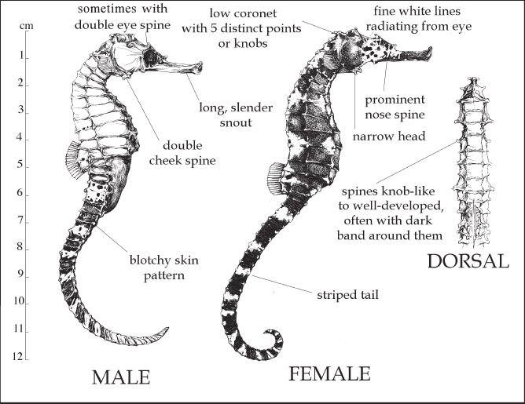
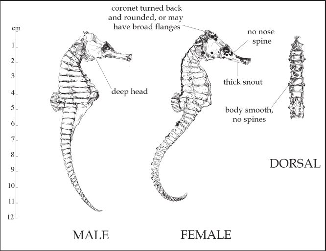

|
|
| fishes text index | photo index |
| fishes Family Syngnathidae > Genus Hippocampus |
| Tiger-tailed
and estuarine seahorses How to tell them apart? updated Oct 2020 |
| It is hard to
tell apart these two kinds of seahorses. According to the Singapore
Red Data Book, the Tiger-tailed seahorse (Hippocampus
comes) is usually found in coral reefs, while the Estuarine
seahorse (Hippocampus kuda) is found mainly in seagrass
areas near sources of freshwater. In Singapore, the Tiger-tailed seahorse
is mainly found around the Southern Islands, while the Estuarine seahorse
is found all around Singapore in shallow waters. These two diagrams were taken from Lourie, S. A., Sarah J. Foster, Ernest W. T. Cooper, and Amanda C. J. Vincent, 2004. A Guide to the Identification of Seahorses. Project Seahorse and TRAFFIC North America. Washington D.C.: University of British Columbia and World Wildlife Fund. |


Links
References
|